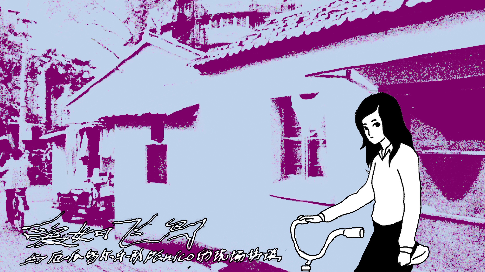

该活动恰逢厄瓜多尔独立游戏《Despelote》发布，该游戏用电子叙事重现了美洲杯期间动荡的厄瓜多尔社会。活动计划包括采访为游戏配乐的乐队Pánico，讨论他们在网络叙事时代对城市氛围、文学和爱的表达（采访最终因乐队睡过头而取消）。 Transparent Society | Love Like a Bird | Live Connection with Ecuadorian Band Pánico (June 1st, 10 PM). The event coincides with the release of the Ecuadorian indie game Despelote, which uses electronic narrative to recreate the turbulent Ecuadorian society during the Copa America. The event planned to include an interview with Pánico, the band that composed the game's soundtrack, to discuss their expression of urban atmosphere, literature, and love in the age of online narratives (the interview was ultimately cancelled due to the band oversleeping).